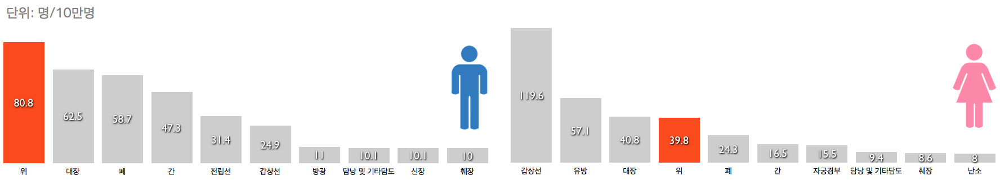
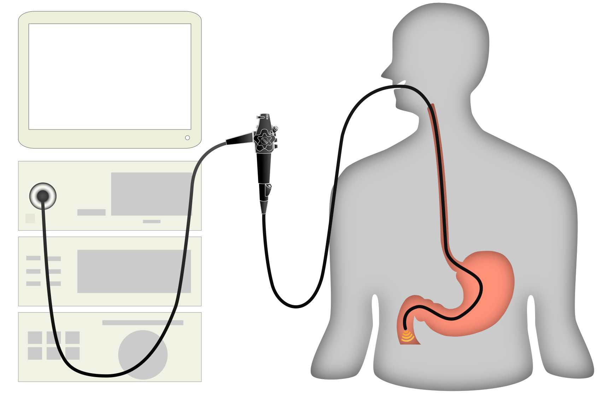

위암은 우리나라에서 남성에서는 1위, 여성에서는 4위로 매우 흔하게 발생하는 암입니다. 이렇게 많이 발생하는 위암을 진단하기 위한 중요한 검사인 ‘상부위장관내시경검사’를 함께 알아 볼까요?

흔히 위내시경이라고 불리는 상부위장관 내시경 검사는 식도, 위, 십이지장에 발생한 질환을 굴곡성의 전자내시경기기를 사용하여 식도-위-십이지장까지 관찰하는 검사 방법입니다. 내시경검사는 육안으로 직접 병변을 관찰하고, 필요한 경우에는 조직검사, 헬리코박터 감염의 진단을 위한 검사, 색소 살포 등의 추가적인 검사를 할 수 있으므로 보다 정확한 진단이 가능하고 치료방침을 결정하는 데에도 크게 도움이 됩니다.
